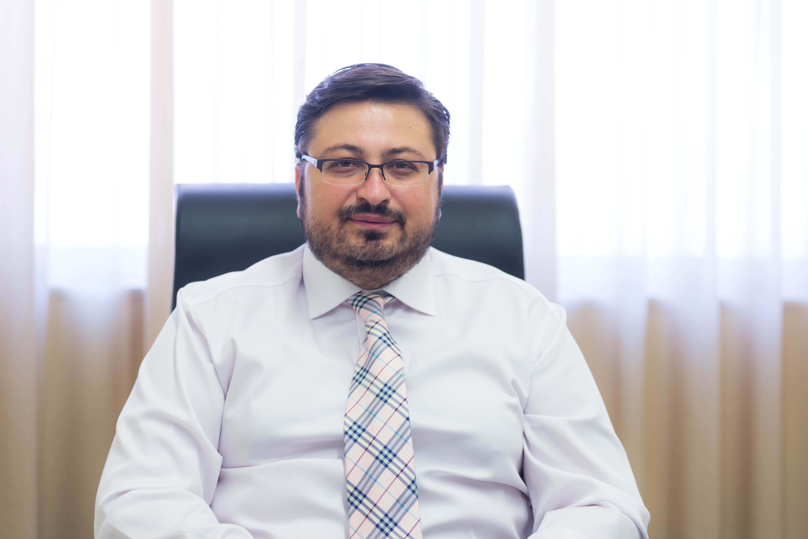
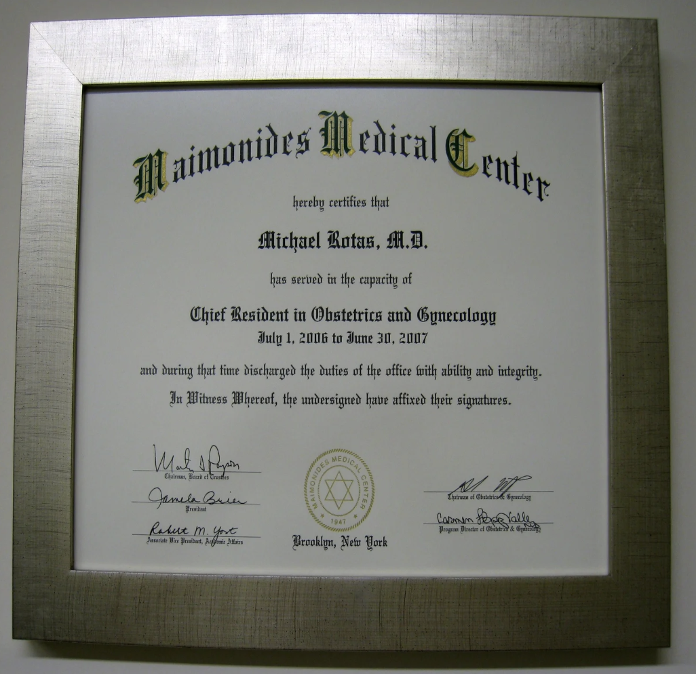
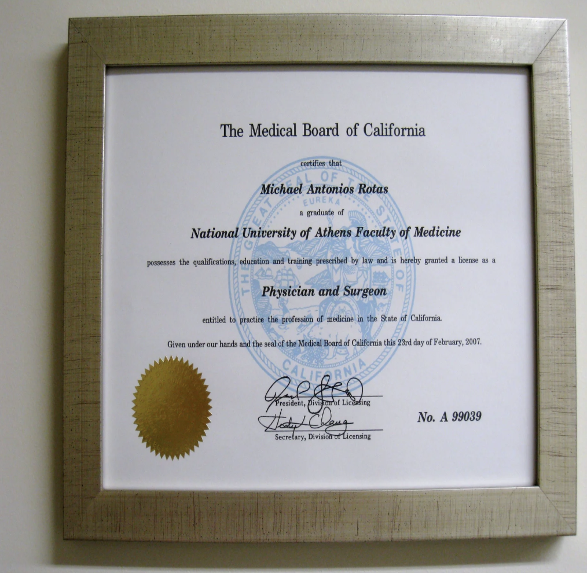
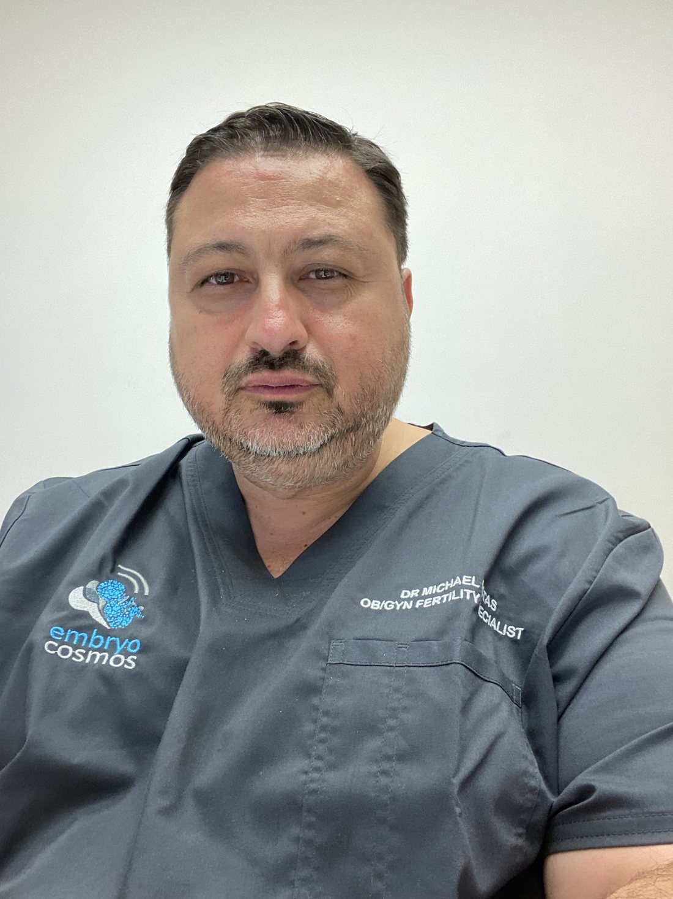
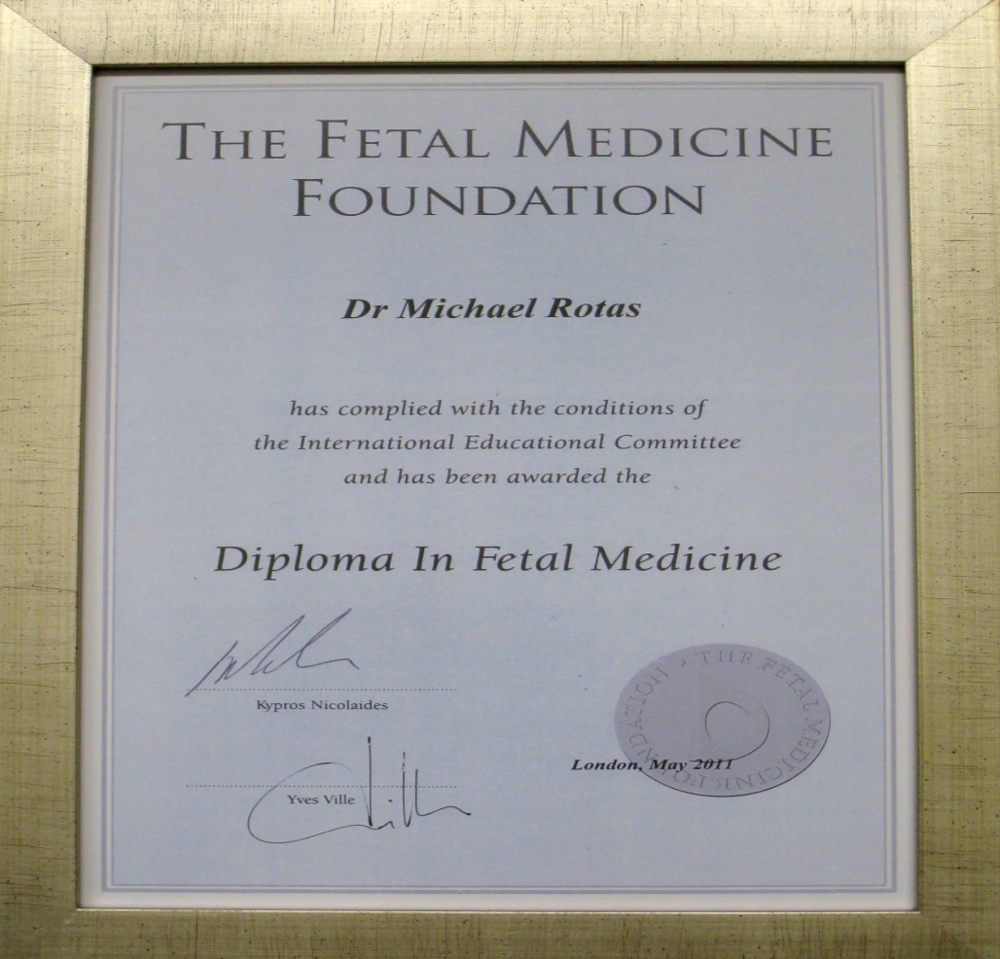
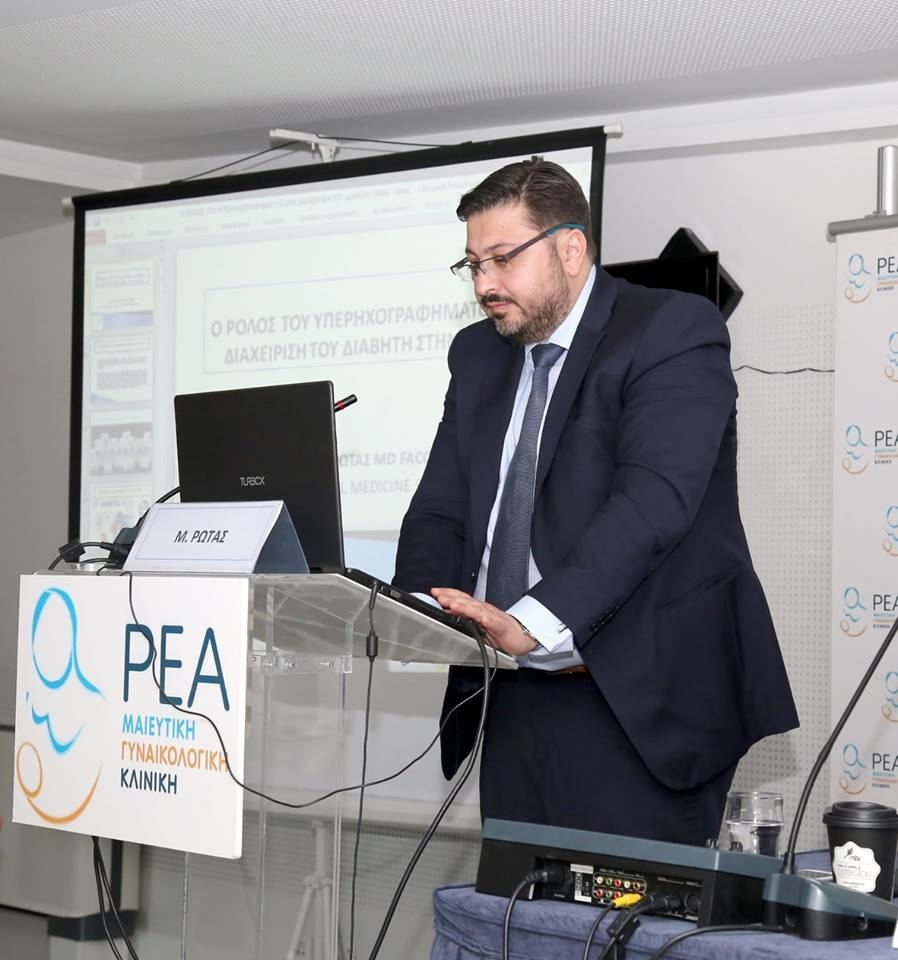

International training
A decade at leading university centers
Dr. Michael Rotas graduated from the Medical School of the University of Athens. During his studies he received numerous awards and honors. He also held the Papadakis bequest scholarship and a State Scholarships Foundation (IKY) scholarship throughout his studies.

USA
Full residency and clinical experience in the United States
After graduating, and following the highly demanding USMLE examinations, he obtained his license to practice medicine in the United States, where he moved to complete his full residency in Obstetrics and Gynecology.
He worked in major university hospitals on the East Coast of the USA, among them:
- Maimonides Medical Center State University of New York in Brooklyn (SUNY)
- Memorial Sloan Kettering Cancer Center
- Yale University Hospital
- Coney Island Hospital

Chief Resident in Obstetrics and Gynecology
July 1, 2006 June 30, 2007

Physician and Surgeon License
License to practice medicine in the State of California.

Maternal–fetal medicine
Subspecialty training in one of New York's largest units
He was a senior member of one of the largest maternal–fetal medicine units in the state of New York, which specializes in the management of specific infections in pregnancy.
As a result of his experience and work in this field he is regarded in the USA as an expert on infections in pregnancy, and he serves on the review board for infection in pregnancy of the journal Obstetrics and Gynecology.
After completing his training and obtaining his specialist qualification, he worked as an attending physician at the University of Southern California — Ventura Medical Center.
London
Harris Birthright Research Centre for Fetal Medicine
The next stage of his training was London, where he gained the subspecialty in maternal–fetal medicine and the Diploma in Fetal Medicine.
He worked at the Harris Birthright Research Centre for Fetal Medicine at King's College Hospital for three years, alongside Professor Kypros Nicolaides.
Areas of expertise gained during his training in London
- Nuchal translucency assessment at 12 weeks.
- Level II ultrasound at 20 weeks to screen for congenital anomalies.
- Doppler studies and fetal growth ultrasound at 32 weeks.
- Amniocentesis and chorionic villus sampling to rule out genetic abnormalities.
- Laser therapy for twin–twin transfusion syndrome (TTTS) in monochorionic twins.

Diploma in Fetal Medicine
One of the few Greek holders of the Diploma in Fetal Medicine (FMF).
Private practice of Professor Kypros Nicolaides
Performing specialized ultrasound examinations at an international referral center.

Current clinical practice
Return to Greece and continuing international activity
During the same period he had the rare privilege of working at the private Fetal Medicine Centre of the world-renowned Professor Kypros Nicolaides in London — the doctor who, among other things, developed nuchal translucency screening.
He also holds a certificate in fetal echocardiography, accredited by Professor Lindsay Allan, the pediatric cardiologist specializing in fetal echocardiography.
Dr. Rotas returned to Greece in 2011 after a ten-year international career and works at the Fetal Medicine Unit of the REA Maternity Hospital.
He has given dozens of presentations and talks at international and Pan-American congresses, has dozens of publications in respected international journals, and has been selected by many journals as a peer reviewer.